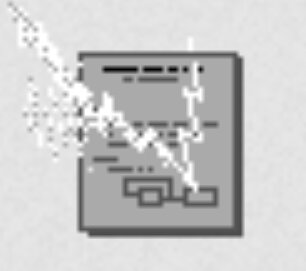

Nace ARPANET, la red precursora de internet. El 29 de octubre se envía el primer mensaje entre UCLA y Stanford.

Ray Tomlinson envía el primer correo electrónico.
Se adopta el protocolo TCP/IP (1 de enero), considerado el nacimiento oficial del internet moderno.

Tim Berners-Lee propone y desarrolla la World Wide Web (WWW) en CERN.

La WWW se hace pública y se lanza el primer navegador web.
Aparecen navegadores gráficos como Mosaic, popularizando el acceso a la web.

Nace Google, revolucionando la búsqueda en internet.

Se lanza Facebook, impulsando las redes sociales masivas.

Aparece YouTube, transformando el consumo de video online.

Lanzamiento de Twitter (hoy X). El primer tuit fue enviado por Jack Dorsey el 21 de marzo con el texto "just setting up my twttr".

Apple lanza el primer iPhone, popularizando el internet móvil y las apps.

Lanzamiento de Google Chrome, que rápidamente se convierte en uno de los navegadores dominantes.

Satoshi Nakamoto publica el whitepaper de Bitcoin, dando origen a las criptomonedas y blockchain.

Lanzamiento de Instagram, transformando la compartición de fotos y videos en redes sociales.
Lanzamiento de TikTok (como Douyin en China), que populariza los videos cortos a nivel global.en.wikipedia.org

La pandemia de COVID-19 provoca un boom masivo en el uso de internet (videoconferencias como Zoom, streaming, e-commerce y trabajo remoto).

OpenAI lanza ChatGPT (30 de noviembre), iniciando la era accesible de la inteligencia artificial generativa.

Twitter se rebrandea oficialmente como X.